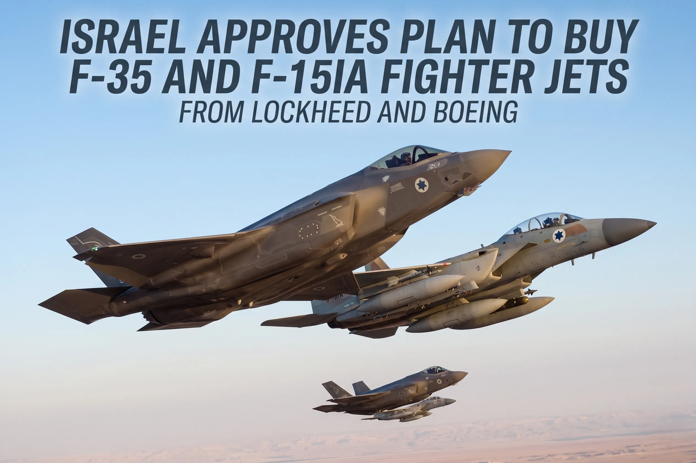

Israel Approves Plan to Buy F-35 and F-15IA Fighter Jets from Lockheed and Boeing

The Israeli air force is set to undergo a significant upgrade with the approval of a plan to purchase F-35 and F-15IA fighter jets from Lockheed Martin and Boeing, respectively. This development marks a crucial enhancement of Israel's military capabilities, particularly in the context of regional security dynamics.
The acquisition of these advanced fighter jets is particularly noteworthy given the current geopolitical landscape of the Middle East. Israel's strategic position and its need to maintain a strong defense against potential threats make such upgrades essential for national security. The introduction of F-35 and F-15IA jets into the Israeli air force will significantly boost its air superiority and strike capabilities.
What the Deal Includes — Jets and Numbers
The deal involves the procurement of F-35 jets, known for their stealth capabilities and advanced avionics, and F-15IA jets, which are customized versions of the F-15 Eagle designed to meet Israel's specific operational requirements. The exact number of jets to be purchased is not disclosed, but such acquisitions typically involve several dozen aircraft, considering the scale of Israel's military operations and the need for both operational and reserve units.
Both the F-35 and F-15IA are designed to provide Israel with the capability to conduct a wide range of missions, from air-to-air combat to deep strike missions against heavily defended targets. The F-35, with its stealth design, offers the ability to penetrate advanced air defense systems, while the F-15IA, with its significant payload capacity and advanced radar, provides superior air-to-air and air-to-ground capabilities.
The customization of the F-15IA for Israel includes advanced Israeli-made systems, reflecting the country's robust defense industry and its capability to integrate indigenous systems with foreign platforms. This not only enhances the aircraft's performance but also underscores the close defense relationship between Israel and the United States, with Boeing working closely with Israeli industries.
Why Israel Is Buying These Aircraft Now
Israel's decision to purchase these aircraft at this time is driven by several strategic considerations. The Middle East is experiencing a period of significant instability, with various actors possessing advanced military capabilities. The acquisition of F-35 and F-15IA jets is part of Israel's broader strategy to maintain its qualitative military edge over potential adversaries.
Furthermore, the introduction of these advanced jets into the Israeli air force will enable it to better counter emerging threats, including the proliferation of advanced air defense systems and the development of fifth-generation fighter jets by other countries in the region. The ability to project air power effectively and maintain air superiority is crucial for Israel's national security strategy.
Also Read
More Latest News stories →The timing of the purchase also reflects Israel's ongoing efforts to modernize its military, ensuring that it remains equipped to address both current and future challenges. This modernization effort is not limited to the air force but is part of a broader defense strategy that includes upgrades to ground and naval forces, as well as investments in cyber warfare capabilities and missile defense systems.
The Strategic Significance of F-35 and F-15IA
The F-35 and F-15IA jets hold significant strategic value for Israel, offering enhanced capabilities that can be leveraged across a variety of scenarios. The F-35, with its ability to perform both air-to-air and air-to-ground missions while minimizing detection, provides Israel with a versatile platform for conducting operations in contested airspace.
The F-15IA, on the other hand, offers superior endurance and payload capacity, making it an ideal platform for long-range missions, including strikes against distant targets and the escort of other aircraft. The combination of these jets with Israel's existing airpower capabilities will significantly enhance its ability to project military power and deter potential aggressors.
The strategic significance of these acquisitions extends beyond their military capabilities, reflecting the deepening defense cooperation between Israel and the United States. The sale of these advanced jets to Israel underscores the strong bilateral relationship between the two countries, with the U.S. supporting Israel's right to self-defense and its need to maintain a qualitative military edge in the region.
Cost of the Deal and US Approval
While the exact cost of the deal is not publicly disclosed, estimates suggest that the purchase of F-35 and F-15IA jets could run into several billion dollars, considering the complexity and the advanced nature of these aircraft. The cost includes not only the purchase price of the jets themselves but also the expenses related to training, maintenance, and the integration of Israeli systems.
The approval of such a significant arms deal by the United States reflects the strategic importance of Israel as a U.S. ally in the Middle East. The U.S. has consistently supported Israel's military modernization efforts, recognizing the country's critical role in regional stability and its commitment to shared security interests.
The U.S. Congress must approve major arms sales, including the sale of advanced fighter jets to foreign countries. The approval process involves a review of the sale's potential impact on the regional balance of power and the recipient country's ability to absorb and maintain the advanced technology.
How This Affects Regional Military Balance
The introduction of F-35 and F-15IA jets into the Israeli air force will have significant implications for the regional military balance. Israel's enhanced airpower capabilities will serve as a deterrent to potential adversaries, reinforcing the country's position as a major military power in the region.
Moreover, the acquisition of these advanced jets will prompt other countries in the region to reassess their own military modernization plans, potentially leading to an arms race. The Middle East is already characterized by a complex web of alliances and rivalries, and the introduction of advanced military technologies will add another layer of complexity to regional security dynamics.
For Israel, the key challenge will be to ensure that its military advantage is maintained over time, through continued investments in defense technology and the development of new operational concepts that leverage its advanced capabilities. This includes not only the acquisition of new hardware but also investments in cyber warfare, electronic warfare, and other domains that are critical to modern military operations.
Key Takeaways
- Israel's purchase of F-35 and F-15IA jets marks a significant upgrade of its air force capabilities, enhancing its ability to project military power and maintain air superiority.
- The acquisition reflects Israel's strategic need to counter emerging threats in the region and maintain its qualitative military edge over potential adversaries.
- The deal underscores the strong defense relationship between Israel and the United States, with the U.S. supporting Israel's military modernization efforts as part of their bilateral strategic cooperation.
Frequently Asked Questions
What are the main advantages of the F-35 jet for Israel?
The F-35 offers Israel advanced stealth capabilities, enabling it to penetrate contested airspace and conduct missions with a high degree of effectiveness. Its advanced avionics and sensor systems also provide superior situational awareness and targeting capabilities.
How does the F-15IA differ from the standard F-15 Eagle?
The F-15IA is a customized version of the F-15 Eagle, designed to meet Israel's specific operational requirements. It includes advanced Israeli-made systems and has been modified to carry a variety of indigenous weapons, enhancing its air-to-air and air-to-ground capabilities.
What is the significance of the U.S. approval for the sale of these jets to Israel?
The U.S. approval reflects the strong strategic relationship between the two countries and the U.S. commitment to supporting Israel's right to self-defense. It also underscores the importance of Israel as a U.S. ally in the Middle East, contributing to regional stability and security.
How will the introduction of these jets affect the regional military balance?
The introduction of F-35 and F-15IA jets into the Israeli air force will enhance Israel's military capabilities, potentially prompting other countries in the region to reassess their military modernization plans. This could lead to an arms race, adding complexity to regional security dynamics and underscoring the need for continued diplomacy and cooperation to maintain stability.
Conclusion
The approval of Israel's plan to purchase F-35 and F-15IA fighter jets from Lockheed Martin and Boeing marks a significant development in the country's military modernization efforts. This acquisition will not only enhance Israel's airpower capabilities but also reflect the deepening defense cooperation between Israel and the United States, reinforcing their strategic partnership in the region.
As the Middle East continues to evolve, with new challenges and opportunities emerging, the introduction of advanced military technologies will play a critical role in shaping regional security dynamics. For Israel, the key will be to leverage its advanced capabilities effectively, ensuring that its military edge is maintained over time through continued investments in defense technology and strategic cooperation with its allies.
Senior Editor
Experienced journalist bringing you accurate, well-researched stories. Follow for the latest updates and in-depth coverage.
Leave a Comment